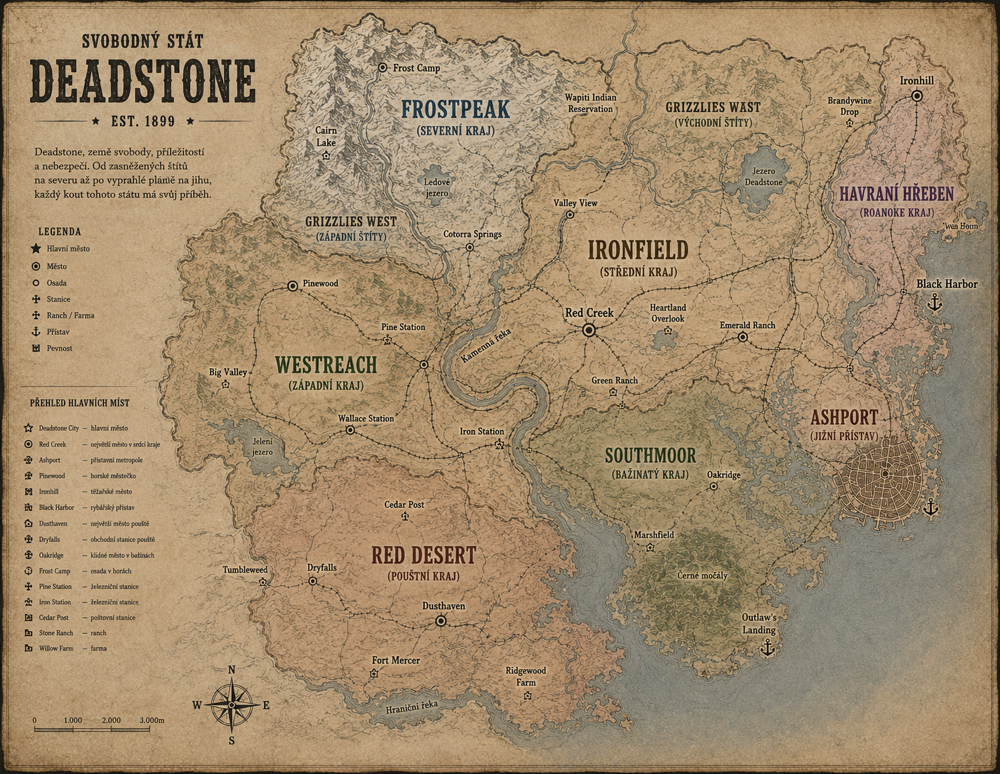

Svobodný stát · 1899
Atlas státu
Deadstone
Poznejte kraje, města, osady a významná místa Svobodného státu Deadstone.
Ve světě Deadstone se používají vlastní názvy měst, oblastí a významných lokalit. Tento atlas slouží jako oficiální geografický průvodce pro všechny obyvatele i nově příchozí.
Kartografický úřad
Mapa státu
Tažením mapu posunete, kolečkem nebo tlačítky změníte přiblížení. Kliknutím na značku otevřete zápis o lokaci.

Šest krajů
Regiony Deadstone
Městský a krajský rejstřík
Přehled měst a lokací
Takové místo nebylo v úředních mapách nalezeno.
Orientační pomůcka mimo RP
Převodník názvů
Tato tabulka slouží jako orientační pomůcka pro hráče, kteří znají původní mapu Red Dead Redemption 2.
Ve světě Deadstone se při roleplayi používají výhradně názvy Deadstone. Původní názvy slouží pouze jako orientační pomůcka mimo roleplay.